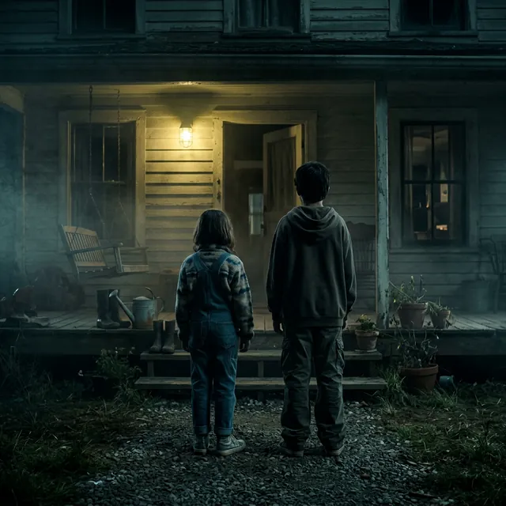

1. 都市伝説の概要

夜中に家のドアを叩く音。開けると、そこには二人の子供が立っている。彼らは一見普通の子供のように見えるが、その瞳には白目がなく、すべてが真っ黒な漆黒の闇で満たされている。これが「Black Eyed Children（BEK：黒い瞳の子供たち）」と呼ばれる伝説の典型的な姿です。
彼らは「電話を貸してほしい」「家に入れてほしい」と奇妙に落ち着いた、あるいは金属的な声で懇願します。しかし、招き入れてしまった最後、彼らが何をするのか、招き入れられた者がどうなったのかについて語られることは稀です。ただ、強烈な恐怖感と不快感、そして「この世のものではない」という直感が、遭遇者を襲います。
2. なぜ広まったのか
この伝説の起源は、1996年にジャーナリストのブライアン・ベセルがネット掲示板に投稿した自身の体験談にあるとされています。テキサス州アビリーンの駐車場で、二人の少年から「映画に行くためのお金を借りたい。家まで送ってほしい」と話しかけられた際、彼らの瞳が真っ黒であることに気づき、恐怖とともに車を走らせたという内容でした。
この物語が爆発的に拡散した理由は、インターネット黎明期の掲示板やメーリングリストにおける「Creepypasta（ネット怪談）」の台頭と密接に関係しています。シンプルな視覚的恐怖（真っ黒な目）と、子供という「無垢な存在」に潜む「底知れぬ悪意」というギャップが、人々の原始的な恐怖を刺激しました。
3. 科学的・歴史的検証
論理的に見て、BEKの存在を裏付ける物理的な証拠は一切存在しません。監視カメラに映った例や、警察に正式に届けられた確実な記録はなく、そのすべては「個人の体験談」に依存しています。
心理学的には、これは「不気味の谷現象」や「社会的恐怖の投影」として説明可能です。また、コンタクトレンズ技術の向上により、「真っ黒な瞳」を演出することが容易になったことも、目撃証言のリアリティを（皮肉にも）高める要因となりました。さらに、ベセルの投稿以前に「黒い瞳の子供」という概念が広く存在していなかった事実は、これが現代の創作物であることを強く示唆しています。
4. 残る疑問
しかし、ベセルの投稿以来、世界中で（ベセルの投稿を知らないはずの人々からも）似たような報告が相次いでいる点は無視できません。これは単なる「同調現象」なのか、あるいは、私たちが共有している「深層心理の中の怪物」が具現化した結果なのでしょうか。
また、目撃者が共通して訴える「物理的な体調不良」や「電子機器の不調」といった現象は、単なる心理的なパニックで片付けられるものなのか、それとも未知の物理的要因が関与しているのか——。その空白は埋まらないままです。
5. 合理的結論
「Black Eyed Children」は、1990年代にインターネットから生まれた**現代の民間伝承（アーバン・レジェンド）**であると結論づけるのが最も妥当です。デジタル時代において、恐怖はウイルスのように拡散し、人々の集合的無意識の中で形を成していきます。
彼らはドアの向こう側に実在するのではなく、私たちのインターネットという暗闇の中に潜んでいるのかもしれない。